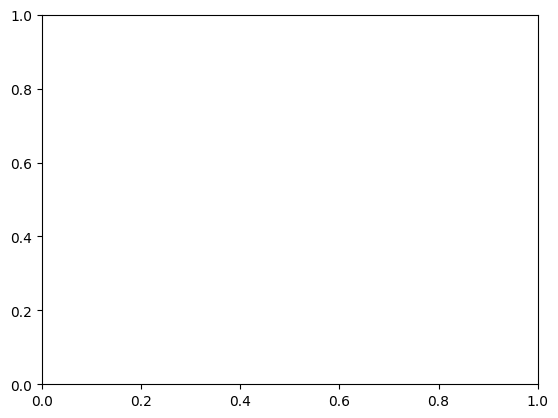
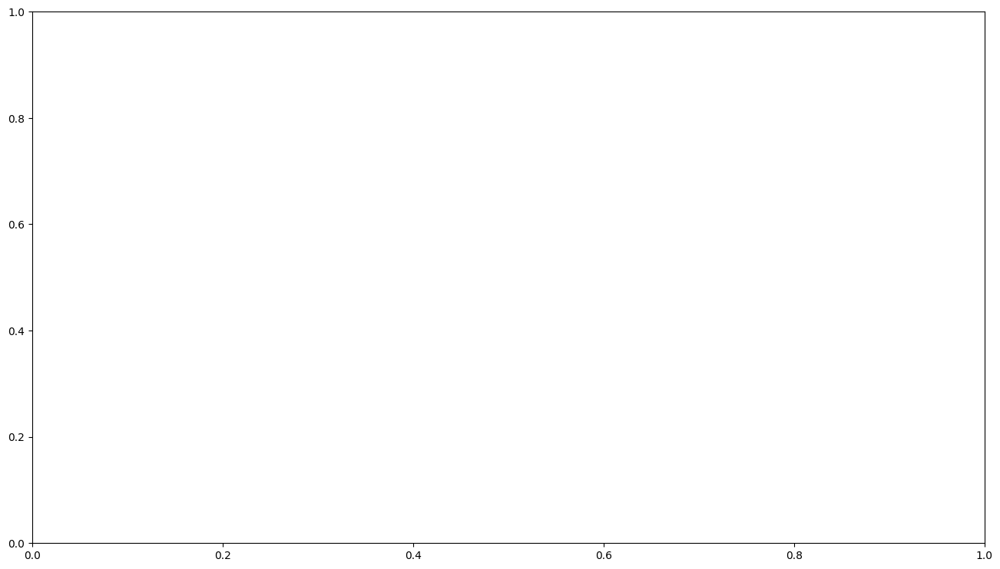
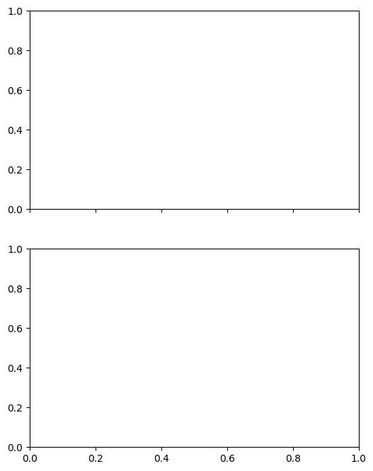

Plotting data with matplotlib#
After a few weeks at learning programming, you may have noticed already that computers are quite good at manipulating numbers. The python language is helping us at it, by providing an interface between us and “the machine”. However, we are going to see that the language needs a little bit of “extra help” to become truly useful for us scientists.
This help comes with the scientific python ecosystem: in the front line, numpy and matplotlib!
I strongly recommend to download this notebook, run the examples yourself and play with it on your computer as you go through this unit (see the explanation video).
Matplotlib#
Why matplotlib?#
Matplotlib is a comprehensive library for creating plots and graphics in python. It is used in combination with NumPy in many (many) scientific applications.
Installing matplotlib#
Make sure you have followed my instructions before going on.
How to import matplotlib#
For now, you will import the matlotlib tools we need like this:
import matplotlib.pyplot as plt
This command is only importing a subset of all matplotlib functions, but it is the most commonly used (by far).
Matplotlib is best learned by doing. Today I’ll showcase some of the tools you’ll need for the assignments, and with time you’ll learn to use many more!
A first plot#
# This you should know by now what it does - if not, check it out above
x = np.linspace(0, 2 * np.pi, 5)
y = np.sin(x) * 12
# This is new
fig, ax = plt.subplots()
ax.plot(x, y)
plt.show()
---------------------------------------------------------------------------
NameError Traceback (most recent call last)
Cell In[2], line 2
1 # This you should know by now what it does - if not, check it out above
----> 2 x = np.linspace(0, 2 * np.pi, 5)
3 y = np.sin(x) * 12
5 # This is new
NameError: name 'np' is not defined
Let’s repeat this example, but with inline comments and adding some elements to the plot:
fig, ax = plt.subplots() # Create a figure containing a single axes.
ax.plot(x, y) # Plot some data on the axes.
ax.set_xlabel('Time') # Add a label to the x-axis
ax.set_ylabel('Air temperature (°C)') # Add a label to the y-axis
ax.set_title('A typical day at home') # Add a title to the plot
plt.show() # show the figure on screen. This is optional in Jupyter Notebooks but mandatory in scripts
---------------------------------------------------------------------------
NameError Traceback (most recent call last)
Cell In[3], line 2
1 fig, ax = plt.subplots() # Create a figure containing a single axes.
----> 2 ax.plot(x, y) # Plot some data on the axes.
3 ax.set_xlabel('Time') # Add a label to the x-axis
4 ax.set_ylabel('Air temperature (°C)') # Add a label to the y-axis
NameError: name 'x' is not defined

Exercise: write a simple python script (not a notebook) reproducing the plot above. Run the code with and without plt.show() at the end.
Line plots#
Line plots are probably the most common way to represent data.
# Create some data
x = np.linspace(0, 2 * np.pi, 100)
y1 = np.sin(x) * 12
y2 = y1 + 5
# Plot it
fig, ax = plt.subplots()
ax.plot(x, y1, label='Suburbs')
ax.plot(x, y2, label='City center')
ax.legend() # Draw the legend from line labels
ax.set_xlabel('Time')
ax.set_ylabel('Air temperature (°C)')
ax.set_title('A typical day at home');
---------------------------------------------------------------------------
NameError Traceback (most recent call last)
Cell In[4], line 2
1 # Create some data
----> 2 x = np.linspace(0, 2 * np.pi, 100)
3 y1 = np.sin(x) * 12
4 y2 = y1 + 5
NameError: name 'np' is not defined
Scatter plots#
Scatter plots are used when it does not make sense to connect the data points together with lines. This happens when there is no temporal or spatial relationship between the data points, when the data is noisy or has discontinuities (for example wind direction).
Scatter plots are often used in statistics, to represent relationships between data. Here for example:
# Create random data
y3 = y2 + np.random.randn(y2.size)
# Make a scatter plot
fig, ax = plt.subplots()
ax.scatter(y2, y3)
ax.set_xlabel('Reality')
ax.set_ylabel('Measured')
ax.set_title('Measured vs reality');
---------------------------------------------------------------------------
NameError Traceback (most recent call last)
Cell In[5], line 2
1 # Create random data
----> 2 y3 = y2 + np.random.randn(y2.size)
4 # Make a scatter plot
5 fig, ax = plt.subplots()
NameError: name 'y2' is not defined
Styling plots#
You can change the style of practically everything in a plot. For now, we will focus on the most important things: figure size, lines and markers.
fig, ax = plt.subplots(figsize=(16, 9))
ax.plot(x, y1, color='navy', linestyle='--', label='Suburbs')
ax.plot(x, y2, color='crimson', linewidth=3, label='City center')
ax.plot(x, y3, marker='o', linestyle='none', color='tomato', alpha=0.5, label='City center (uncertain)')
ax.legend()
ax.set_ylim(-20, 20)
ax.set_xlabel('Time')
ax.set_ylabel('Air temperature (°C)')
ax.set_title('A typical day at home');
---------------------------------------------------------------------------
NameError Traceback (most recent call last)
Cell In[6], line 2
1 fig, ax = plt.subplots(figsize=(16, 9))
----> 2 ax.plot(x, y1, color='navy', linestyle='--', label='Suburbs')
3 ax.plot(x, y2, color='crimson', linewidth=3, label='City center')
4 ax.plot(x, y3, marker='o', linestyle='none', color='tomato', alpha=0.5, label='City center (uncertain)')
NameError: name 'x' is not defined

Figure size can be set when the figure is created.
Lines can be styled as “solid” (or
-), “dotted” (or..), “dashed” (or--), “dashdot” (or-.). More options are available for the adventurous. Their width can be changed with thelinewidthkeyword (accepting a float).Markers can be added to line plots (
marker=...). Their are many different ones (here is a list). In the example above, I also chose to plot only markers, no line (linestyle='none')Colors can be set in many different ways, the most common is to use named matplotlib colors
Transparency can be set with the
alpha=keyword.Axis ranges can be set with
ax.set_ylim()(orax.set_xlim()for the x axis)
The line and marker styles are then automatically applied to the legend as well.
Exercise: play around with the many options available and make experiments!
Plotting data of different units#
Sometimes, you want to plot data with very different values on the same figure. For example, plotting data of different order of magnitudes or of different units:
# Create some data
x = np.linspace(0, 2 * np.pi, 200)
y1 = np.sin(x) * 12
y2 = np.cos(x) * 0.0001 # Very different scale
fig, ax = plt.subplots()
ax.plot(x, y1)
ax.plot(x, y2);
---------------------------------------------------------------------------
NameError Traceback (most recent call last)
Cell In[7], line 2
1 # Create some data
----> 2 x = np.linspace(0, 2 * np.pi, 200)
3 y1 = np.sin(x) * 12
4 y2 = np.cos(x) * 0.0001 # Very different scale
NameError: name 'np' is not defined
The problem is that the orange line has variations which are not visible in the graph. There are two simple solutions to this problem, explained below.
Two subplots on the same figure#
# Subplots: 2 rows one column, they share the same x-axis
fig, (ax1, ax2) = plt.subplots(2, 1, figsize=(6, 8), sharex=True)
# Plot on the first axis as usual
ax1.plot(x, y1, label='Data 1')
# Plot on the second axis
ax2.plot(x, y2, color='C1', label='Data 2');
# Add the legend for both axis
ax1.legend(loc='upper right')
ax2.legend(loc='lower right')
# Labels and titles
ax1.set_ylabel('Data 1 (°C)')
ax2.set_xlabel('Time')
ax2.set_ylabel('Data 2 (W m$^{-2}$)')
ax1.set_title('A fair comparison');
---------------------------------------------------------------------------
NameError Traceback (most recent call last)
Cell In[8], line 5
2 fig, (ax1, ax2) = plt.subplots(2, 1, figsize=(6, 8), sharex=True)
4 # Plot on the first axis as usual
----> 5 ax1.plot(x, y1, label='Data 1')
7 # Plot on the second axis
8 ax2.plot(x, y2, color='C1', label='Data 2');
NameError: name 'x' is not defined

Two y-axis on the same plot#
fig, ax = plt.subplots()
# Plot on the first axis as usual
ax.plot(x, y1, label='Data 1')
# Add a twin axis to the right and plot on it
axr = ax.twinx()
axr.plot(x, y2, color='C1', label='Data 2 (right)');
# Add the legend for both axis
ax.legend(loc='lower left')
axr.legend(loc='lower right')
# Labels and titles
ax.set_xlabel('Time')
ax.set_ylabel('Data 1 (°C)')
axr.set_ylabel('Data 2 (W m${2}$)')
ax.set_title('A fair comparison');
---------------------------------------------------------------------------
NameError Traceback (most recent call last)
Cell In[9], line 4
1 fig, ax = plt.subplots()
3 # Plot on the first axis as usual
----> 4 ax.plot(x, y1, label='Data 1')
6 # Add a twin axis to the right and plot on it
7 axr = ax.twinx()
NameError: name 'x' is not defined
Storing the plot as png or pdf for later#
If you are happy with a plot and want to store it on your computer for later use (in a report or a manuscript), use fig.savefig:
fig, ax = plt.subplots()
# Plot on the first axis as usual
ax.plot(x, y1, label='Data 1')
# Add a twin axis to the right and plot on it
axr = ax.twinx()
axr.plot(x, y2, color='C1', label='Data 2 (right)');
# Add the legend for both axis
ax.legend(loc='lower left')
axr.legend(loc='lower right')
# Labels and titles
ax.set_xlabel('Time')
ax.set_ylabel('Data 1 (°C)')
axr.set_ylabel('Data 2 (W m${2}$)')
ax.set_title('A fair comparison');
# Save the figure
fig.savefig('myfigure.png', dpi=150, bbox_inches='tight')
---------------------------------------------------------------------------
NameError Traceback (most recent call last)
Cell In[10], line 4
1 fig, ax = plt.subplots()
3 # Plot on the first axis as usual
----> 4 ax.plot(x, y1, label='Data 1')
6 # Add a twin axis to the right and plot on it
7 axr = ax.twinx()
NameError: name 'x' is not defined
figure.savefig has several options available. The first position argument fname indicates the path to the file to write (default is is the current working folder) and its format (e.g. .png, .pdf or .eps). The other two arguments are setting the resolution the final image and whether to have margins around the figure (I often use bbox_inches='tight').
Learning checklist#
To go further#
The Basic usage documentation page is a good place to start if you are curious to learn more